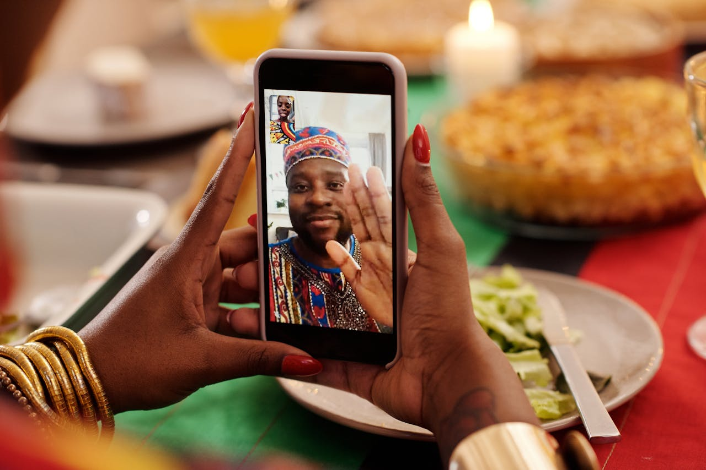

A Netric é uma startup que busca mudar a maneira de conectar as pessoas.
Nosso aplicativo móvel é construído para criar e aumentar as conexões entre você, pessoas que conhece e pessoas que você quer conhecer. Com várias startups em nosso portfólio, a equipe da Netric está trabalhando para trazer a você tudo em um único aplicativo.
Conecte com amigos
Use a Netric para se conectar às pessoas que você conhece.
A Netric pode conectar você a pessoas fora de seu círculo habitual.

Contrus a sua base social
A Netric apresenta ideias e espaços que podem deixar você interessado.
Você pode usar esses espaços para conhecer novas pessoas e criar conexões.